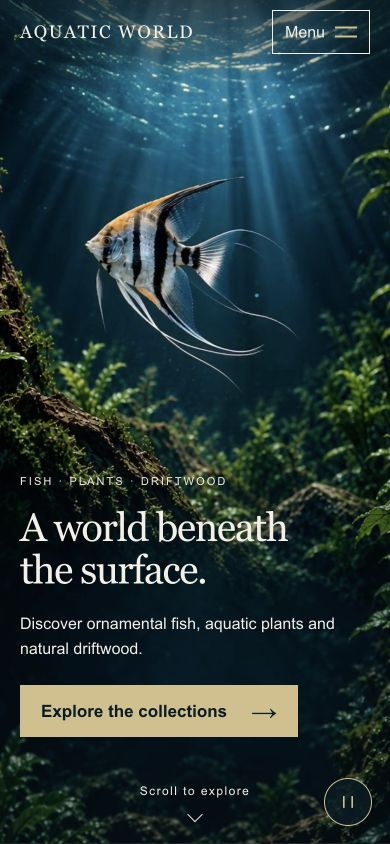
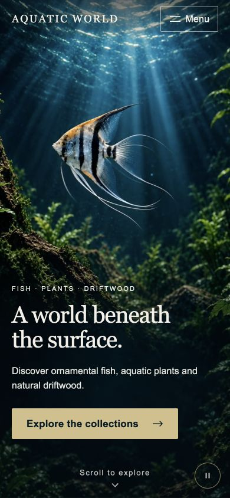

Codex · GPT-6.1 Sol
Open live Codex site
Actual browser captures from the same refinement brief, six native references and identical films. These stills compare layout; open the live sites to assess motion. This revision protects the scrolled navigation row and keeps the full action visible on narrow landscape screens. Creative acceptance remains open.


200% uses temporary computed-font and line-height scaling, restored by reload; it is not native zoom or a physical-device test. Independent clips are not frame-synchronized. No new video generation in this round.